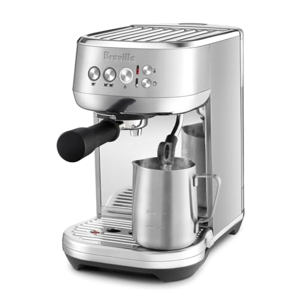
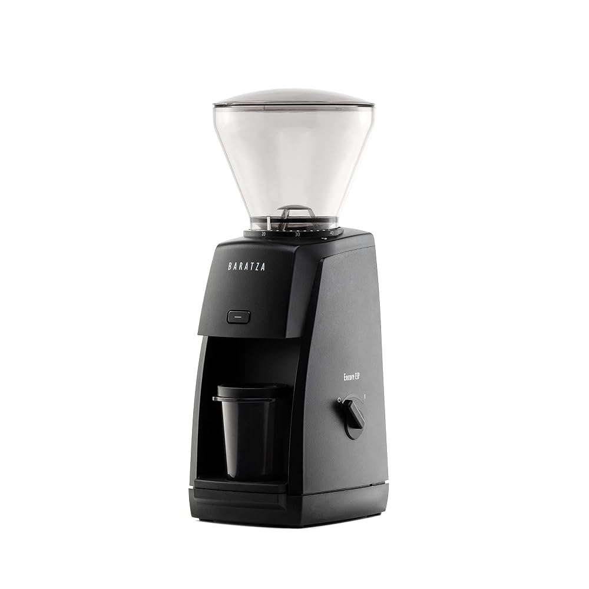
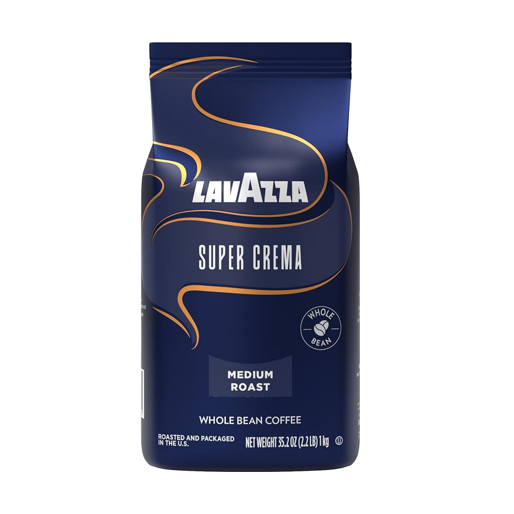
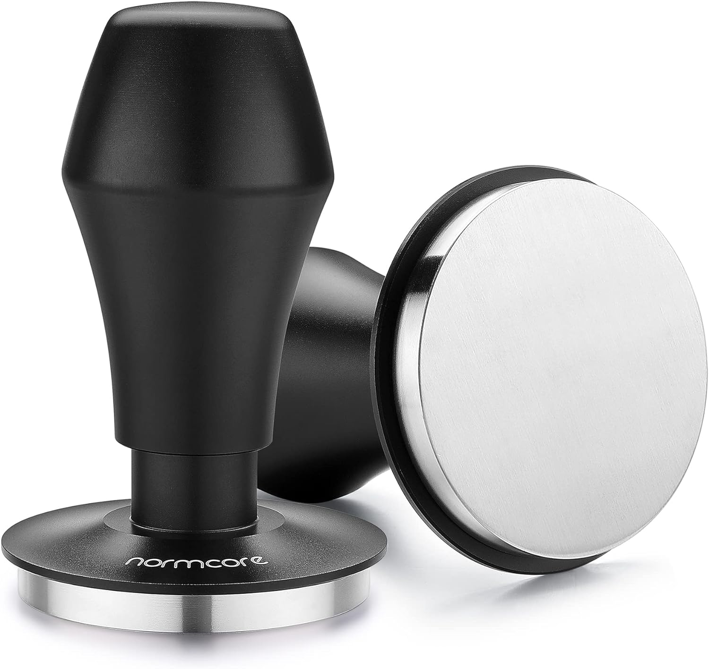
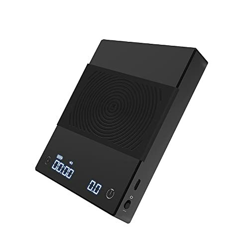
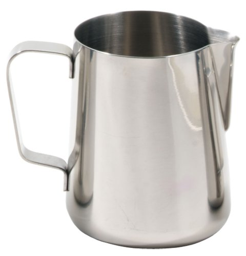

Honest, tested gear guides and plain-English how-tos for anyone setting up their first home espresso bar. No jargon, no snobbery — just what works.

Four machines that are forgiving to learn on without wasting money — tested at every budget.

The grinder matters more than the machine. Here's where to spend and where to save.

The bean matters more than most beginners realize. Four fresh-roasted picks at every budget.

Consistent tamping is what separates repeatable shots from guesswork. Spring-loaded picks for every budget.

A scale turns espresso into a repeatable process. Three picks with fast response and built-in timers.

The right pitcher makes latte art achievable. Size guide and top picks for home setups.